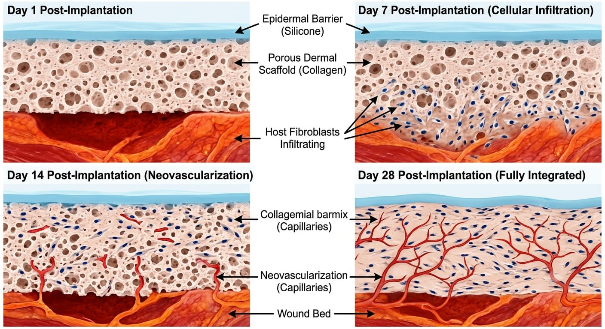

While cellular composite substitutes deliver living cells directly to a wound, another branch of tissue engineering focuses strictly on architectural framework. Acellular Dermal Matrices (ADMs) and synthetic scaffolds are biological constructs entirely devoid of living cells or immunogenic antigens. Instead, they provide a pristine, three-dimensional porous structure that acts as a regenerative template for the patient’s own cells to colonize.
The clinical philosophy of ADMs relies on in vivo regeneration rather than in vitro construction. When a massive burn destroys the dermis, the body rapidly produces chaotic, cross-linked collagen bundles, resulting in severe hypertrophic scars. By implanting a dermal scaffold, surgeons provide native fibroblasts and endothelial cells with an organized extracellular matrix (ECM) to migrate along, forcing the cells to regenerate a pliable, functional "neodermis."

As depicted in Fig vii, the gold-standard mechanism is the two-layer dermal regeneration template (e.g., Integra). The bottom layer consists of a highly porous matrix of bovine tendon collagen and shark cartilage glycosaminoglycan. This combination mimics the natural dermal ECM, encouraging aggressive capillary infiltration and fibroblastic invasion.
The top layer of these scaffolds is a temporary, ultra-thin polysiloxane (silicone) sheet. This synthetic pseudo-epidermis serves a critical physiological role immediately post-excision by sealing the massive wound, preventing evaporative fluid loss, completely blocking bacterial contamination, and providing crucial mechanical protection while the underlying collagen matrix is actively vascularized.
The creation of allogeneic and xenogeneic ADMs relies on a complex bioengineering process known as decellularization. Donored tissue undergoes aggressive chemical processing using detergents, enzymes, and hypotonic washes. This strips away the epidermis, cell membranes, and nucleic acids to prevent an immune response, while carefully preserving the structural integrity of the native collagen and elastin fibers.
| Scaffold/Matrix Type | Biological Composition | Surgical Protocol | Primary Clinical Indication |
|---|---|---|---|
| Integra® Template | Bovine collagen and shark GAG with a silicone epidermal layer. | Two-Stage: Wait 14-21 days for vascularization, remove silicone, and apply STSG. | Massive full-thickness burns, scar revisions, and complex traumatic soft tissue loss. |
| MatriDerm® | Bovine dermis collagen integrated with an elastin matrix; highly porous structure. | Single-Stage: Applied directly to the wound bed with an STSG layered on top. | Deep partial-thickness burns and reconstructive surgeries where immediate closure is possible. |
| AlloDerm® / Human ADM | Decellularized human cadaveric dermis; perfectly retains native human ECM architecture. | Implantable: Often used as a subcutaneous implant or sub-dermal support sling. | Breast reconstruction, abdominal wall repair, and deep cavity soft tissue filling. |
Clinical implementation of dermal templates typically requires a staged surgical approach. After excising the necrotic eschar down to viable fat or fascia, the scaffold is sutured to the wound bed. During the integration phase (Days 1–21), native macrophages slowly degrade the acellular matrix while host fibroblasts deposit new, organized human collagen in its place.
Once the matrix exhibits a peach or pale red color—indicating that successful capillary neovascularization has permeated the scaffold—the patient is returned to the operating room. The temporary silicone pseudo-epidermis is peeled away, and a highly expanded, ultra-thin autograft (epidermis only) is applied over the newly formed, vascularized neodermis to provide permanent epithelial closure.
While ADMs have revolutionized burn outcomes by eliminating severe scar contracture, they rely entirely on a sterile, highly vascularized wound bed for survival. The lack of living cellular elements means ADMs possess no inherent antimicrobial properties, rendering them highly susceptible to catastrophic failure in the presence of invasive wound infections.